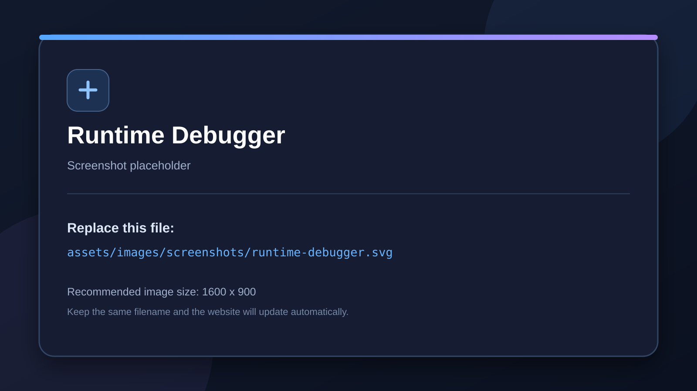

Audited against addon source
Debugging
Use per-brick watches and the runtime debugger instead of temporary Print bricks.
Per-brick debugging
Use the debug control on a brick to mark that brick for runtime observation. Debug watches are saved in node metadata and are intended to show only the values you deliberately enable.
State debugging
The States panel includes a debug watch control that can show the selected node’s current state in the runtime overlay.
Runtime Debugger
The runtime debugger displays watched brick values and watched state information while the project runs. The addon also includes a Debug menu in the game window for opening the Logic Bricks debugger.
